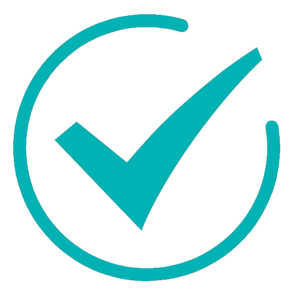

<!DOCTYPE html>
<html>
<head>
    <meta charset="UTF-8">
    <meta name="viewport" content="maximum-scale=1.0,minimum-scale=1.0,user-scalable=0,width=device-width,initial-scale=1.0"/>
    <title>计划完成情况</title>
    <link rel="stylesheet" type="text/css" href="../css/api.css"/>
    <link rel="stylesheet" type="text/css" href="../css/style.css"/>
    <link rel="stylesheet" type="text/css" href="../css/aui.2.0.css"/>
    <link rel="stylesheet" type="text/css" href="../css/aui.css"/>
    <link rel="stylesheet" type="text/css" href="../css/aui-skin.css"/>
    <style>
    </style>
</head>
<body>
   <ul id="project_list_out" style="margin-left:20px">
   </ul>

</body>
</html>
<script type="text/javascript" src="../script/api.js"></script>
<script type="text/javascript" src="../script/jquery-1.4.2.min.js"></script>
<script type="text/javascript">


    apiready = function () {
      getAllDataFromServer();
    }

    function getAllDataFromServer(){
        // var UILoading = api.require('UILoading');
        //   UILoading.flower({
        //       center: {
        //           x: 160,
        //           y: 240
        //       },
        //       size: 30,
        //       fixed: true
        //   }, function(ret) {
        //alert(JSON.stringify(ret));
        //   });
        api.ajax({
            url: $api.getStorage('connectUrl')+'/Maintenancer/CheckPlanDetail',
            //url:'http://192.168.0.7:8080/firefighting/Maintenancer/CheckPlanDetail',
            method: 'post',
            dataType: 'text', //该参数若不传，则默认为json<div class="aui-tips aui-margin-b-15">2
            data: {
              values:{userName: $api.getStorage('account'), maintenanceplan_id: JSON.parse(api.pageParam.param1).maintenanceplan_id} //maintenanceplan_id需要从上个界面传过来
            //  values:{userName: 'ME0100002', first_time: '2000-01-01',second_time:second_time} //键值对
            }
            },function(ret,err){
              // var UILoading = api.require('UILoading');
              // UILoading.closeFlower({
              //      id: id++                         //关闭id 号对应加载提示框
              // });
                  if (ret) {
                        //alert(ret);
                    var recode = $api.strToJson(ret);
                    var status = recode.status;
                    if (status=="true") {
                      //alert(ret);
                      var finished_data_info = recode.finished;
                      information = eval(finished_data_info);
                      var obj ="";
                      var obj_in ="";
                      $("#project_list_out").html("");
                      $("#project_list_in").html("");
                      if (information.length==0) {
                        api.toast({
                            msg: '当前时间段没有任务',
                            duration: 1000,
                            location: 'bottom'
                        });
                      }else{
                      for (var i = 0;i<information.length;i++) {
                          //使用information[i]来获取一个个的json对象
                        obj = '<li style="margin-top:20px">'+information[i].first_project_name+'';
                        $("#project_list_out").append(obj);
                        var second_project_info = eval(information[i].second_project);
                        //alert(second_project_info.length);
                        for (var j = 0; j < second_project_info.length; j++) {
                         //var value = '{first_project_id:'+information[i].first_project_id+',first_project_name:'+information[i].first_project_name+',second_project_id:'+second_project_info[j].second_project_id+',second_project_name:'+second_project_info[j].second_project_name+'}';
                         obj_in = '<li style="margin-top:7px;margin-left:20px;">'+second_project_info[j].second_project_name+'</li>';
                         $("#project_list_out").append(obj_in);
                      }
                    }
                  }
                 }else {
                   api.toast({
                       msg: recode.message,
                       duration: 2000,
                       location: 'bottom'
                   });
                 }
           } else {
             alert("服务器异常，请稍后重试");
           };
     });
}
</script>
